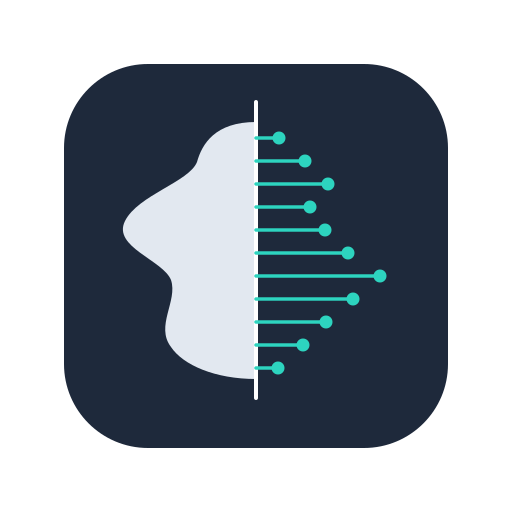
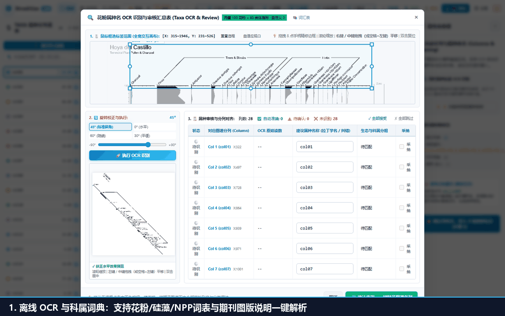

Straditize Pro
在科研流程中，图谱数字化不是终点，而是下游多元统计、古生态重建与论文图表绘制的输入端。本教程介绍 Straditize Pro 对齐 WebPlotDigitizer (WPD) 的科学导出面板，以及如何无缝配合 R 语言生态（rioja、vegan）完成高水平地层图谱绘制。

许多通用图表采集软件因每一列采集的点数不一致，导致横向拼接为数据框时，非控制点行全部充斥着缺失值 NA。而在古生态学中：
NA，直接导入 R 语言的 rioja::strat.plot() 或运行 DCA/PCA 排序分析时，会导致整行或整列被全部剔除。0.00；depth：无论是导出 CSV 还是 Excel，首列统一且无条件为 depth，无缝兼容各类分析包。点击顶栏右侧的 “💾 导出 CSV” 即可呼出科学导出面板：
标准深度层位网络 [推荐: 无NA/全属种]：最适合下游统计与画图的标准数据表；原始逐像素轮廓提取 [超高密度]：包含剖面上每一个像素行的密集采样；离散控制点坐标 [骨架点]：仅导出用户与算法生成的关键拐点。Depth（深度）或按属种列排序；2 位，支持 0-6 位调节）；0.0 (地学规范)。[📋 复制]：将格式化文本直接拷入系统剪贴板；[💾 下载 CSV]：保存为可以直接被 Excel / R / Python 读取的标准表格；[📈 R 脚本]：生成针对当前属种列定制的 plot_strat.R 脚本；[📦 导出 TAR 包]：将原始图谱、矢量模型及全部衍生数据打包为 POSIX UStar 开放归档。点击导出面板上的 “📈 R 脚本”，你将获得如下自动化脚本：
# ==============================================================================
# Straditize Pro - Geological Stratigraphic Pollen Diagram Plotting Script
# Generated automatically by Straditize v2.0 (straditize pro)
# ==============================================================================
if (!requireNamespace("rioja", quietly = TRUE)) {
message("Installing required package 'rioja' from CRAN...")
install.packages("rioja", repos = "https://cloud.r-project.org")
}
library(rioja)
# 1. 读取解译出的标准无 NA 数据集
df <- read.csv("straditize_pollen_output.csv", check.names = FALSE)
# 提取深度列与属种数据列
depths <- df[[1]]
taxa_data <- df[, -1]
# 2. 绘制出版级花粉图谱
strat.plot(
taxa_data,
yvar = depths,
y.rev = TRUE, # 深度倒序：地层从浅到深排列
scale.percent = TRUE, # 自动缩放百分比刻度
plot.line = TRUE, # 绘制轮廓连线
plot.poly = TRUE, # 填充实心多边形
col.poly = "#38bdf8", # 优雅科研配色
col.poly.line = "#0284c7",
title = "Stratigraphic Diagram (Generated by Straditize Pro)"
)只需在 R / RStudio 中运行该脚本，即可在一秒钟内完成专业论文级花粉图谱绘制！